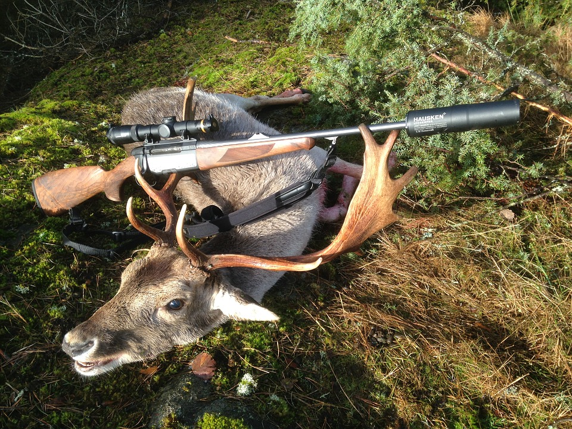
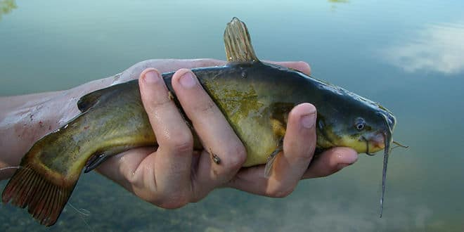
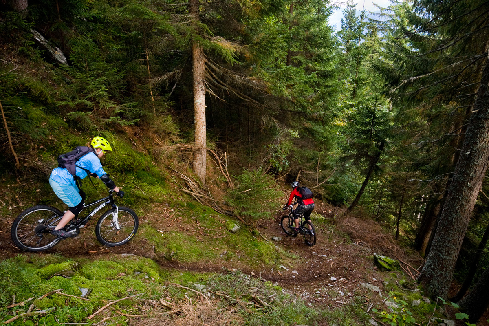

La chasse
La chasse est la traque d'animaux dans le but de les capturer ou de les abattre, les manger ou les détruire. Quand la chasse est soumise à une réglementation, la pratique de la chasse en dehors de son cadre légal est appelée braconnage. La cynégétique est l'art de la chasse. Le mot chasse peut ou pouvait aussi désigner des terrains de chasse, l'IGN possède par exemple une « Carte des chasses du roi », levée de 1764 à 1773 et de 1801 à 1807 sur ordre de Louis XV et à partir d'une carte antérieure du Duché de Rambouillet.
Juridiquement, La chasse a aussi une dimension d'appropriation d'animaux sans propriétaires légaux par un individu ou un groupe d'individus (Res nullius dans le droit). Ainsi en 1845, selon J. Perrève ancien procureur du roi et juge, « la chasse, qui est un titre d'occupation, un moyen originaire, primaire d'acquérir la propriété, est l'action de les rechercher, de les poursuivre, de s'en emparer par force, par ruse ou adresse, soit au moyen d'engins, soit à l'aide d'animaux domptés pour l'usage domestique ou dressés à cette fin ».
Le chasseur est défini par le Codex alimentarius comme une personne qui participe à l'abattage du gibier et/ou à la saignée, à l'éviscération partielle et à l'habillage partiel sur le terrain des animaux abattus
La pêche
La pêche est une activité économique ou de subsistance, professionnelle ou de loisir, qui consiste à capturer des poissons (ou des crustacés, des coquillages)L'histoire de la pêche remonte à la Préhistoire et au moins au paléolithique (-40 000 ans environ). En témoignent les restes d'arêtes, ossements ou écailles trouvés dans les campements, en bordure de mer ou de zones humides et autour des foyers dans les fouilles préhistoriques ces indices archéopaléontologiques permettent de reconstituer la taille des poissons préférés par les populations qui les ont laissés, voire l'âge de certains poissons (par différentes méthodes développées par l'archéo-ichthyologie, par exemple si des otolithes en bon état peuvent être retrouvés).
Le vélo
En 1817, le baron allemand Karl Drais von Sauerbronn invente sa Laufmaschine ou « machine à courir » qui est présentée à Paris le 5 avril 1818 Brevet d'importation français déposé par Louis-Joseph Dineur au nom du Baron Drais le 17 février 1818 : sous l'appellation d'une « Machine dite vélocipède. ».maintenat connu sous le nom de velo le velo à révolucioné les sport!